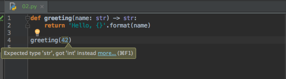
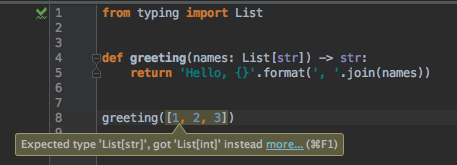

Python Type Hinting¶
Python 3.5 introduces type hinting to help code-writing during development. Let’s take a look at this feature and show it in action.
Motivation¶
Some folks, but not all, like help from their tools when writing code and documentation. For example, lint-like tools can spot errors before your code executes, and editors and IDEs can harness that to show you mistakes, as you type. Particularly for large code bases and large teams, such help is quite valuable.
These mistakes can include passing the wrong type of value to a function. Wouldn’t it be great if you could get that help once typed, or even as you are typing (autocompletion)? Other languages have some concept of type checking. We don’t want to turn Python into a statically-typed language. But can’t we get a little help?
Python’s PEP 484 brings optional type hinting to Python 3.5.
Using the typing module, you can provide type hint
information in your code. This can be used by yourself or others to
flag certain problems, while you are developing.
Quick Example¶
Code speaks, so let’s start with an example. mypy was the
originator of Python 3.5’s typing module. Let’s use one
of its
examples:
def greeting(name):
return 'Hello, {}'.format(name)
This example shows the most important part of type hinting: it is optional. Python hasn’t changed to suddenly require static typing. But if we add a little more:
def greeting() -> str:
return 1
...then we can let an IDE such as PyCharm help us:
What Is (and Isn’t) Type Hinting?¶
There’s a lot of apprehension out there about this new language feature. Before showing more in-depth code, let’s try to clear this up. First, here’s what type hinting is for:
- Develop better/faster. Think of it like linting, or as Guido said, “linting on steroids”. With the right tools, it can surface mistakes more quickly.
- Help users of your code. If someone wants to use your function, type hinting helps explain (autocomplete) and flag when they mess up.
- Documentation. Rather than pack argument and response type information into carefully-formatted docstrings, use something in the language.
So that’s the benefit, but what is type hinting not?
- Not required. You can ignore it. You can use it a little. You can use it a lot. It’s all the same. Heck, Python itself (at runtime) ignores type hinting.
- Not static typing. This is not, not, not changing Python into Java. The language is not enforcing anything.
- Not Performance boosting. Providing type information makes people think of compilation speedups. But this has no impact on Python execution. Also, the Cython and PyPy teams have said these type hints are unlikely to make a difference to them for speedups.
- Not incompatible. The extra characters added into your code are ignored by older versions of Python 3. This requirement – to be syntactically-valid pre-3.5 – was a constraint on the options for expressing the hints. If you’re one that thinks the syntax is ugly, this constraint is likely to blame.
Type hinting is most useful when you share your code with a consumer: when you publish a library, or code in a project with others, or helping out your future self who needs to live with the sins of your current self.
With all that preface out of the way, let’s take a look at some usages.
Generics¶
The teeny-tiny examples above just cover a single argument or return value. What if I want to say hello to a list of names?
Python 3.5’s type hinting provides an answer for this. Namely, you can express the hint as “a list of strings”:
from typing import List
def greeting(names: List[str]) -> str:
return 'Hello, {}'.format(', '.join(names))
greeting(['jane', 'john', 'judy'])
What happens if we ignore the hint and supply a list of integers? PyCharm warns us:
PEP 484 refers to hints such as List as “generics”. That is, a hint
that contains other hints. An Iterator for example is a list-y kind
of generic. As you would expect, dictionaries are supported:
from typing import Dict
# Let's pass in a dictionary
def greeting(names: Dict[str, int]) -> str:
keys = names.keys()
return 'Hello, {}'.format(', '.join(keys))
greeting({'jane': 10, 'john': 11, 'judy': 12})
In this case we see an unusual-looking structure: Dict[str, int].
Think of the values between the brackets as “arguments” to the generic
Dict type. The first argument is the type of the dictionary keys.
The second is the type of the dictionary values.
Optional Values¶
We are now passing in a string to use for formatting. But maybe we’d
like our class to provide a default string. Let’s allow None as a
value that can be passed in, in addition to a string:
class Greeter:
def __init__(self, fmt: str):
if fmt:
self.fmt = fmt
else:
self.fmt = 'Hi there, {}'
def greet(self, name: str) -> str:
return self.fmt.format(name)
greeting = Greeter(None)
print(greeting.greet('jane'))
Alas, type hinting now warns us that the first argument has to be a string:

Fortunately there are several ways to solve this, each useful in various circumstances. For example, we could use regular Python and make this a keyword option with a default:
class Greeter:
def __init__(self, fmt: str = None):
if fmt:
self.fmt = fmt
else:
self.fmt = 'Hi there, {}'
def greet(self, name: str) -> str:
return self.fmt.format(name)
greeting = Greeter()
print(greeting.greet('jane'))
With this, you can omit passing in a format string and instead use a
value of None. (Of course, you could skip the following test and
just make the format string the keyword default.) If you pass in an
integer, though, you’ll get warned:

Here’s another variation: allow your users to pass in a formatting
string or False:
from typing import Union
class Greeter:
def __init__(self, fmt: Union[str, bool]):
if fmt:
self.fmt = fmt
else:
self.fmt = 'Hi there, {}'
def greet(self, name: str) -> str:
return self.fmt.format(name)
greeting = Greeter(False)
print(greeting.greet('jane'))
The Union type from typing, as shown here, lets the type be
from any of the provided type values. In this case, str or bool.
Here, though, is the approach that best conveys the meaning of optional:
from typing import Optional
class Greeter:
def __init__(self, fmt: Optional[str] = None):
if fmt:
self.fmt = fmt
else:
self.fmt = 'Hi there, {}'
def greet(self, name: str) -> str:
return self.fmt.format(name)
greeting = Greeter()
print(greeting.greet('jane'))
That is, PEP 484 type hinting defines a generic type of Optional.
String-Based Hints¶
I follow a pattern where I use a static method on my class to query for instances. Hey, I saw someone smart post it once, don’t judge me. For example, in a SQLAlchemy model:
class ToDo(Base):
__tablename__ = 'todo'
id = Column(Integer, primary_key=True)
title = Column(Text)
@classmethod
def list(cls) -> List[ToDo]:
return session.query(cls).order_by(cls.title)
Unfortunately, that fails. As the mypy docs explain: “Python
does not allow references to a class object before the class is
defined.”:

To fix this, type hinting has the concept of a forward reference. In the location where you would normally provide the hint, just provide that same hint, but in a string:
class ToDo(Base):
__tablename__ = 'todo'
id = Column(Integer, primary_key=True)
title = Column(Text)
@classmethod
def list(cls) -> List['ToDo']:
return session.query(cls).order_by(cls.title)
This lets the Python interpreter parse the module at import time, then deal with the type hinting later.
Stub Files¶
As mentioned in the introduction, some people might find all this type hinting to be noise that distracts from the readability of the code. Wouldn’t it be great if you could get the benefits of type hinting, but keep that information separate? Or in other cases, you can’t actually put in the type hints: it’s in old version of Python code (before function annotations), or in C code, or in code you don’t control.
For these cases, Python type hinting provides stub files. These are
extra files, named the same as the module they are stubbing, which
contain the type hints. For example, imagine we have a simple function
in a module with a filename of greeting.py:
def greeting(name):
return 'Hello, {}'.format(name)
No type hinting. Then, imagine a second file, in the same directory,
named greeting.pyi:
def greeting(name: str) -> str: ...
The addition of the .pyi suffix makes this shadow the original
module. PyCharm helps by denoting the stubbing with an asterisk in
the gutter, and a mouseover gives more detail:

If we now try to “break the rules” of type hinting, we’ll get the same effect we would if we put the type hints directly in our code:

Type Aliases¶
Sometimes the function arguments and return values can get quite
unwieldy. Imagine a greeting function which could accept either a
list of strings, or a dictionary where each value is a list of strings.
Based on this, you’d also need return different types of values.
Here’s what the type hinting would look like:
from typing import Union, List, Dict
def greeting(names: Union[List[str], Dict[int, List[str]]]) -> Union[
List[str], Dict[int, List[str]]]:
fmt = 'Hello, {}'
if isinstance(names, dict):
return [(k, fmt.format(', '.join(v))) for k, v in
names.items()]
else:
return fmt.format(', '.join(names))
print(greeting(['jane', 'john', 'judy']))
print(greeting(
{10: ['jane', 'judy'],
11: ['john'],
12: ['judy', 'john']
}
))
Gorgeous, isn’t it? Well, not so much. For cases like this, Python 3.5 type hinting provides a type alias: a way to define the type hint information in one place, then use it in one or more other places. Let’s define a type alias for a GreetingType:
from typing import Union, List, Dict
GreetingType = Union[List[str], Dict[int, List[str]]]
def greeting(names: GreetingType) -> GreetingType:
fmt = 'Hello, {}'
if isinstance(names, dict):
return [(k, fmt.format(', '.join(v))) for k, v in
names.items()]
else:
return fmt.format(', '.join(names))
print(greeting(['jane', 'john', 'judy']))
print(greeting(
{10: ['jane', 'judy'],
11: ['john'],
12: ['judy', 'john']
}
))
That’s a lot tidier, letting the function usage concentrate on the meaning and the declaration contain the noise....erm, provide the detail.
And yes, this section was added in response to a StackOverflow complaint about the unwieldy syntax.
Downsides¶
For the audience that wants tools to warn them earlier, Python 3.5 type hinting is very valuable. But not everybody falls into that category. They might use simpler editors. Or they might view those extra characters as seriously breaking Python’s readability.
In theory the answer is simple: “Then don’t use type hinting, it’s optional.” But the worry is that if type hinting becomes “best practice”, library authors will be pressured into supporting it. At that point, adoption will go up and you’ll constantly come across Python code that gouges your eyeballs. It won’t feel so optional then.
On the other side of the argument, some might wish it went further. Perhaps it should cover more cases. Perhaps it should bend the language syntax further to avoid the forward-reference comment-based type hinting, or provide a less line-noise-looking way to express complicated typings.
Conclusion¶
That’s a walkthrough Python 3.5 type hinting: what it is and isn’t, and
ways that it can help you write quality code faster. This article isn’t
an exhaustive treatment of all the options. For more information, take
a look at the mypy
examples
and PEP 484.
It’s Alive!¶
This article is more than just a writeup. It’s also:
A repository where you can get updates, original sources, and file bugs or suggestions
A screencast at blah blah
A CookieCutter project template that gets you a working example, already wired up for PyCharm. Once you have CookieCutter installed, just do:
$ cookie-cutter etc.
Part of a larger PyCharm knowledge base of articles and code